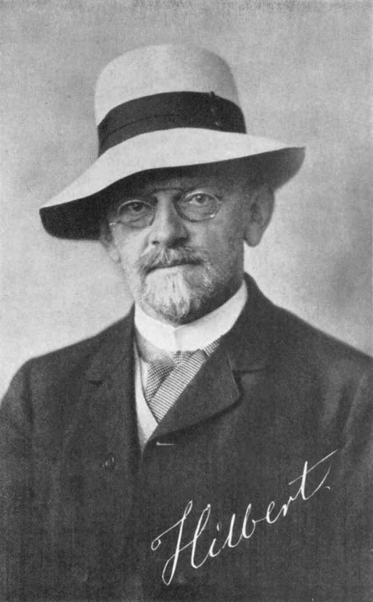

Voici quelques liens vers des sites de vulgarisation des mathématiques et des sciences en général. J'ai aussi rédigé des réponses aux questions les plus fréquentes posées par les stagiaires.
L'ENS Lyon accueille chaque année des stagiaires lyvéens et collégiens. Voici une liste de problème sur lesquels nous avons travaillé. Ici un script python qui simule le problème du falotier.
Images des mathématiques, sur les mathématiques, publié par le CNRS
Interstices, sites sur les sciences du numérique, publié par l'Inria
Quanta Magazine, sur les sciences fondamentales, publié par la Simons Foundation
Maths en jeans!
Le site Analysis Situs, consacré à la topologie algébrique.
Une brochure de la SMF, l'Explosion des mathématiques
Le diplôme requis pour devenir maître de conférence ou chargé de recherche au CNRS est le doctorat. Avant cela, il est nécessaire de valider un diplôme de master recherche dans la discipline concernée. Bien sûr, l'accès au master est conditionné par un diplôme de niveau licence.
Il n'est pas rare d'être passé par un cursus parallèle. Par exemple, les écoles d'ingénieurs proposent souvent des double-diplômes avec des master dans une université. De même, les deux premières années de licence peuvent être effectuées dans une classe préparatoire aux grandes écoles. Ceci est bien détaillé dans la dernière partie de ce document.
Complément: il est d'usage de faire un (ou plusieurs) postdocs après sa thèse. Ce sont des postes de 1 ou 2 ans en général, dans un laboratoire, souvent à l'étranger.
En général, une fois un article rédigé, les chercheurs mettent leur article en ligne sur le site arxiv. On appelle cela une pré-publication, ou preprint en anglais. Ces versions préliminaires sont en libre accès, et tout le monde peut les lire en téléchargeant l'article depuis le site.
L'article est ensuite soumis à un journal, où, s'il est accepté, il sera relu et corrigé par des pairs. Lorsque l'article est accepté, il est publié dans la revue, et est considéré comme valide.
Le site Google Scholar recense beaucoup d'articles: un recherche par mots-clés ou par nom de chercheurs renvoit une liste, avec en général des liens vers les articles. D'autres informations sont disponibles: le nombre de citations, etc.
Les articles sont rédigé en LateX, un logiciel spécial qui permet de faire la mise en page de façon standardisé, ainsi que d'écrire toute sorte de formule mathématques. Ce logiciel n'est pas un WYSIWYG (What you see is what you get) comme Libre Office par exemple. Le texte est tapé dans un fichier texte, puis ensuite compilé pour donner un pdf par exemple.
Un script ici pour du codage linéaire, de Vigenere et de Hill.
Quelques liens.
Voyage au coeur de la cryptographie, par Frank Chevrier
Petite histoire de la cryptographie: de la machine Enigma à l’ordinateur, par Romain Rouphael et Côme Jean-Jarry
Cryptography’s Future Will Be Quantum-Safe. Here’s How It Will Work., par Leila Sloman.
‘Post-Quantum’ Cryptography Scheme Is Cracked on a Laptop, par Jordana Cepelewicz.
L’algorithme quantique de Shor, par André Chailloux
Les slides de mon exposé du 22 mars 2023 au séminaire de la détente mathématique sur les pavages de Penrose
If you think that scientists want you to prove everything you believe in, that science aims at describing everything in equation, that every researcher is a hardcore materialist or realist who only believes in what she/he sees and can measure, keep on reading! If not, you can still read, I’ll just list some fun (Yay! Science is fun!) facts/results that were discovered and just make a case against that. Science moved on since the Enlightenment
Just to refresh memories (including mine), the Age of Enlightenment is this period roughly between 1650 to 1770 that saw all of Europe and America swept by optimism and self-confidence. At the time, philosophers and scientists were confident in that human reason would dissipate the darkness of the Middle Ages, trapped in its dogmatism and scholastic.
They had reasons to do so. After all, it was a time of revolutions in techniques, agriculture, government etc. In Science, the work of Sir Issac Newton, with his 1687’s book Mathematical Principles of the Natural Philosophy, was one of the masterpiece of that time. It contained the first quantitative (mathematical) physical models among other thing (like, yeah, inventing Calculus).
If you think that every philosopher and scientist of the day was sold to the Enlightenment Philosophy, you can check this Crash Course video on Empiricism, one of the main alternative philosophy back then.
Even if Empiricism is very interesting, my original point was to present some discoveries that challenged the idea that rationality could one day lead us to describe the world completely. So here we go.
Chaotic systems
Newton gave a law for gravitation from which he derived equations for the motion of planets. When only two planets are involved, he showed that the system was stable. Nothing was known for more bodies until the work of Henri Poincaré, a (French!) mathematician who presented a partial solution to the “three-body problem”. After submitting his article to the King of Sweden (who organized a contest with a prize for anyone who solved this problem), Poincaré realized he had made a mistake and that, for three planets, a very small perturbation in the positions would entail very different orbits.
Even if his solutions was a partial one, Poincaré won the prize. And this was justified as his work would be the starting point of a new branch of mathematics. This area is often called Chaos Theory by popular science books. It can be described as the study of systems which are sensitive to initial conditions. Keep in mind the popular image of a butterfly whose wings flapping cause a hurricane far away.
Sensitivity to initial conditions is a problem for determinism, the idea that knowing the state of a system, you can forecast its future by solving an equation. Indeed, experimentally you can only measure the initial state up to some error. Now, chaotic systems are so sensitive to initial conditions that even this small error does not allow you to conclude: there could be very close initial states that you cannot tell apart yet still gives very different behavior.
Gödel’s theorem
Mathematicians want to prove everything? Well, no, unless you’re one hundred years old and love kick-ass hats.

Actually, it was proven in the 1920’s that a lot of interesting mathematical theories always contain true statements that are not provable (unless you add new axioms and rules, but that would produce new true & unprovable statements). This is roughly the content of Gödel’s Incompletness Theorem.
If you’re interested, you can check this video
or, if you speak French, this one:
The last one is a bit better in my opinion, but no English subtitles… for now.
Quantum mechanics, and the EPR experiment
Lord Kelvin gave a speech in 1900 about how Physics was essentially done, and nothing was left to future physicists but to try and do some progress on measuring more accurately. He still mentioned two “clouds”, the black body radiation and the inability to detect the Aether (space was believed at the time to be filled with some aethereal medium because otherwise, how would light propagates?!).
Then came a little trublion named Einstein who would actually suggest solutions to both these problems in 1905 while throwing away good ol’Physics forever. Sorry Kelvin. To explain the formula obtained by Planck for the blackbody radiation, Einstein suggested to quantize light (the photon), paving the way for quantum mechanics.
If we jump twenty years forward, Quantum Mechanics evolved from a set of particular rules applicable to peculiar situations into an organized theory with axioms and a clear formalism. (Not to make you think that there are no problems in QM, a lot of things are not clear at all but…) The interpretation of QM on the other hand was very much for debate.
One of the point of disagreement was the famous fact that you cannot measure accurately both position and velocity for a particle. This led physicists, supporting what is now called the Copenhagen interpretation, that Physics cannot talk about anything but measurement. Reality is, in that interpretation, not an scientific object.
This deeply upset Einstein, who believed in a tangible world that Physics is to describe. He often objected that the Moon should exist, even if no-one is looking at it. As a result, he spent a lot of time coming up with thinking experiments trying to disprove Copenhagen interpretation. In his views, Quantum Mechanics was only an approximation to the truth: there should be a more fundamental theory form which QM could be derived as a statistical limit, in the same fashion Thermodynamics can be derived from Newtonian mechanics (possibly? Has this been done? Idk).
At the end of his career he wrote an article with two collaborators Podolsky and Rosen, entitled Can Quantum-Mechanical Description of Physical Reality Be Considered Complete?, that is now known as the EPR paper. In it, they thought they proved that “the wave function does not provide a complete description of the physical reality”. What they actually did is propose a experimental test that could determine which one of classical or quantum theories were best able to describe some experiments. After Bell and Bohm understood that, Alain Aspect set up the actual experiments in the seventies. It would prove that classical theories were unable to reproduce quantum entanglement, that QM described perfectly, thus giving a fatal blow to Einstein views. Unfortunately, Einstein was dead by the time the experiments were performed.
(Note: I’m being very unprecise here, as the correct result would be that every local classical theory fails to reproduce entanglement experiments, or again that such a theory cannot violates Bell’s inequalities. This forces one to let go of either locality or realism in Einstein’s sense. Also, locality is the statement that nothing can propagates faster than light.)
To summarize, even local realism is challenged nowadays by science. Here are some videos about EPR’ paradox. Again, the last one is in French but is my favorite…
And
I am done by now, even if there are more discoveries in the same spirit! But this post is long enough.
Maybe you know that astronomers use lightyears to measure great distances. And also that you supposedly cannot go faster than the speed of light. Naturally, I always believed that this prevents anyone from going to far away from earth, putting a sad end to my sci-fi dreams of intergalactic travels. This was forgetting about Einstein and relativity...
From the Aether to time dilations
Of course I won't go straight to the point. I'll first tell you about Michelson and Morley. They were physicists who devised an experiment to measure the speed of the Earth accross the Aether. What's that? Well at the time, it was believed that space was filled with a substance, the Aether, and from what i got, it was supposed to represent the absolute frame of Newton physics. Which means the Aether is the thing compared to which everything else moves. The Moon revolves around the Earth, the Earth around the Sun, the Sun around some bigger star, etc. If you carry on long enough, were they thinking at the time, there is something that doesn't move. And things can get accross it, like light, so it not must be empty. Let's call this nonemptyness the Aether! Yay! By the way, both this statements are considered false from the point of view of modern physics...
Then come Morley and Michelson. Using interferometry, the came hp with a way to measure the displacement of the Earth using light. The idea was to send light in different directions and measure some difference in the phase. The phase depending on the speed you have, you can find out the speed you have from it. Well, can you guess what they found out?
The Earth was not moving! Oups, they just confirmed the Earth was the center around which everything moves. Ptoleme must have been wrong... Unless? Unless light always has the same speed. But now you have another problem: it means that two people moving with respect to each other are measuring the same speed for the same object, which they shouldn't. If you're in a train, and I'm standing still next to it, we would disagree on the speed of a bird which flies around. What we're saying now is: make the bird a photon, and that's not true anymore.
One of the things Einstein did was to find a conceptual framework to explain this apparent contradiction. We can understand what is happening if we modify our way of computing speeds and positions under changes of observers. One of the consequences of this is that speeds don't add up. If everything is slow compared to light, then adding is a good approximation. At high speed, you must take time and space dilations into account. The faster you go, the slower your clock is ticking compared to someone who stays on Earth. To remember it, I use the following trick: it is like saying that you cannot move more in space without diminishing your displacement in time. In a way, you're always moving at the same speed in space-time. If you change one, you must counterbalance with the other.
Back to space travel
What has this everything to do with space travel? Well think about it. Suppose you have a spaceship that can constantly accelerate. While doing that, you reach higher and higher speeds, and your personal clock is slowing down compared to the one they have on Earth. So when we are saying that this galaxy is that much lightyears away from here, we forget to say "in the reference frame of the Earth", or "as seen by an Earthling". In the spaceship, the time is slowing down, and the distances are shrinking, making the faraway just not so far anymore. For instance, if you do the computations, at a constant acceleration equal to that of the gravitational field of the Earth, the galaxies are reachable in a human lifespan. Again: this is only true for the crew, and if they come back, a long time will have pass on Earth, everyone they know will be dead, etc. The rest of us will be condemned to see them go only a tiny portion of their trip.
The problem with that? Once, while talking about that, a friend asked me "But can Human beings endure a constant acceleration for such a long time?" Well, we already are. That's why I took an acceleration of 1g in my example: it is what we are experiencing everyday one Earth. You cannot tell the difference between accelerating and being pulled by gravity. But there is a more serious issue: you need to constantly accelerate, which we don't know how to do.
The way rockets are propelled through space is that we burn a very large amount of gas at ghe beggining, and then just let the ship carry on with the thrust. This means that the acceleration if only processed at the beginning and, hopefully, at the end. So no big time dilations... and nobody knows how to do this yet. Infinite sadness.
If you want to read about this, I would recommend Tau Zero by Poul Anderson. It's a novel about exactly that.
If you ever took a science class, you probably noticed how we are rarely taught about the ideas, stories and the context behind the "facts" we have to learn. What really helped me (to gain some interest, & maybe some understanding) was reading popular science books (or blogs), and I figured that I could just pass the information. So here it is: a (far from complete) list of some of my favorite books.
For those who don't want to read the post, here is the list:
And now, some background and what they are about.
The adventure of numbers, Gilles Godefroy
This is definitely one of, if not the best math book I read. It goes from early Mesopotamian history to contemporary math, and really dedicate some time explaining the ideas behind the technical words mathematicians are using.
You really can tell that Gilles Godefroy is passionate about what he's writing. The part I liked the most is the recollection of the birth of contemporary mathematics, from the crisis when people realized analysis had no foundation whatsoever to set theory and ordinals with Cantor andeven to p-adic numbers, ideals and false proof of the last Fermat's conjecture.
You even have questions that are answered at the end of the book, with actual proofs. This is SUPER rare when it comes to Science books. Maybe for a reason? I mean it could make the book seem technical or out of reach. As an undergrad, I was really excited about his though.
Infinitesimal: How a Dangerous Mathematical Theory
Shaped the Modern World, Amir Alexander
This is as much a history book as a math one. The reader follows the creation of Calculus from Galileo to the end of Renaissance, but this main time-line is really an excuse to discover how modern Science was born and XVIIth century Europe. The writing is super good, plus doesn't focus as much on the math as you would expect for such a title.
I learned ton of stuff: the war that Jesuits were fighting against Galileo's school, the dismantlement of the Italian scientific school and, as a consequence, the establishment of England as the intellectual center of Europe (at that time), how political power and scientific institutions were related back then,... I could go on for a long time. If any of that seems interesting to you, just go and read the book. It will be way better than my misspelled writing.
Quantum: Einstein, Bohr, and the Great Debate about the Nature of Reality, Manjit Kumar
When trying to learn about Quantum Mechanics, one has to go through a lot of mathematical formalism, and often jumps quickly to computations. Little time is devoted to actually discuss interpretation or axioms, at least in my experience.
Manjit Kumar starts from the beginning of QM. When I say beginning, I don't mess with you: the first chapter begins with Lord Kelvin's famous speech in 1900 about how Physics was basically in its final form, and how the task of future physicists would be to tune experimental devices to get better measurements...
Then we get to Black Body radiation and follow how Planck introduced the first quantization as an act of desperation when trying to give a mathematical derivation of the Wien formula.
You also have an entire chapter about Einstein's early life, and work on the photoelectric effect (which got him the Nobel prize...). I know I'm just down for anything Einstein-related, but I'm telling you, this chapter is great!
In general, you have a lot about all the great physicists who created QM, with emphasis on the experiments, which is great, because it really shows how all of this is far from abstract, but actually question our understanding of reality. It also put some perspective on the construction of the Copenhagen interpretation of QM, and the last part of the book details the EPR experiment.
Does God play dice? Ian Stewart
Ian Stewart really has a way with words when it comes to chaos theory. In this book, we learn about nonlinear dynamical systems. These are systems that are modeled by sometimes simple equations, but can still behave in the most unpredictable manner.
If you ever watched Jurassic Park, maybe you remember Jeff Goldblum impersonating a mathematician, Pr. Malcolm, dressed all in black and always explaining to everyone how everything will go wrong and how he's tired of being smart and always right. At some point, he's flirting with Laura Dern (Ellie Sattler) by trying to explain to her what Chaos Theory is. Tips: this is a movie, don't try that in real life, flirting with math NEVER works.
Anyway, he's showing her how if he drops some water on her hand twice, at about the same point, the two droplets will not follow the same way down. That's actually a not so bad analogy of what is called sensitivity to initial conditions: how two systems that start from almost the same point can grow to very different positions in the end. It may seem a bit obvious said like that, but this idea went against the general paradigm in Science developed after the Enlightenment. Philosophers like Descartes or Lagrange thought that if you knew a system with enough precision and you had sufficient computational power, you could predict its future evolution.
These nonlinear systems don't fit into this philosophy, and their study was scarce for a long time, until last century, leading to a lot of excitement, new fields being born, mathematicians actually working with other scientists, and a lot of things which are in the book.
The (Mis)Behaviour of markets & Fractals and Chaos, the Mandelbrot set and beyond & The fractal geometry of nature, all three written by Benoit Mandlebrot
Benoit Mandelbrot is one of the most famous "creator" of fractal theory. As far as it is not a really well defined field, Mandelbrot found a word to unify a wide range of techniques and theoretical tools that came from a mathematical branch called dynamical systems, and were used in applications.
What are fractals? If you look as very irregular objects, like the shape of the coast in the West of France, some of their parts are similar to the whole. In other words, if I show you a picture of a shore, a rock or a cabbage from very close, or the graph of a financial stock, you won't be able to tell the scale. This scale invariance is one of the properties that make fractal objects hard and interesting to study.
Mandelbrot actually has a fractal named after him: the Mandelbrot set.
First of all you can see that it is very irregular: the frontier between the red and black part is very rough. You can also look for repetition in the general shape. If you zoom here for instance, you can see a small part that is exactly like the Mandelbrot set
This images are easily generated by computer today. Here is a fun fact. The first picture of the Mandelbrot set was obtained by Mandelbrot himself while he was working for IBM in NY. He used one of the first computer to do so.
Physics
So before going on with these physics book, I have to confess that I am pretty partial about this selection of authors. Lee Smolin and Carlo Rovelli are both theoretical physicists that helped creating Loop Quantum Gravity. LQG is one of the theories that try to incorporate Quantum Physics to Gravitation, which means it is one of the direct competitor of String Theory. And Smolin's book is also a rather harsh criticism of String Theory, or at least how it holds such an overwhelming position in current Theoretical Physics. Still, Smolin was (is?) a string theorist, which in my opinion gives some weight to his position.
What are the books about? Shortly: modern day physicists Grail: unify Gravitation with QM. Starting with the birth of QM and of Special Relativity, physicists devised the two most accurate physical theories ever produced:
So far, the problem has been incompatibility of these two theories. And physicists are bothered by that. Several attempts have been made. For instance, I remember finding a book at a friend's house where Feynman was explaining is attempt to produce a quantization of the gravitational field by a pertubative approach close to the one used for Weak & Strong Interaction. You also have Penrose's theory of Twistors.
As much as I can tell, the most popular (among physicists) theories are String Theories (and other extensions like Superstrings, M-theory,...). Second would come LQG. What I got (from these books) is that LQG is way less ambitious than Strings: whereas the latter aims at unifying all the known forces in one theory, LQG's goal is "only" to quantize gravity.
I guess I should mention other books like Stephen Hawking's books (A Brief History of Time) or Leonard Susskind's (The Black Hole war), but I believe they are already super popular. To be honest, Hawking's books were the first ones I read. At the time, String Theory and Blackholes seemed super attractive topics. The thing I dislike in general about these books though is the way the theory is presented. The authors don't really draw a line between general accepted facts by the scientific community and speculations proper to String theorists. Where Lee Smolin and Carlo Rovelli are always the first to tell you about a very bold hypothesis and are actually trying to make you understand what made the theorists come to that, I've never read anywhere from a String theorist that the fact that they use space-times with dimension 10 or 11 or whatever is actually because their models don't work with the usual dimension 4.